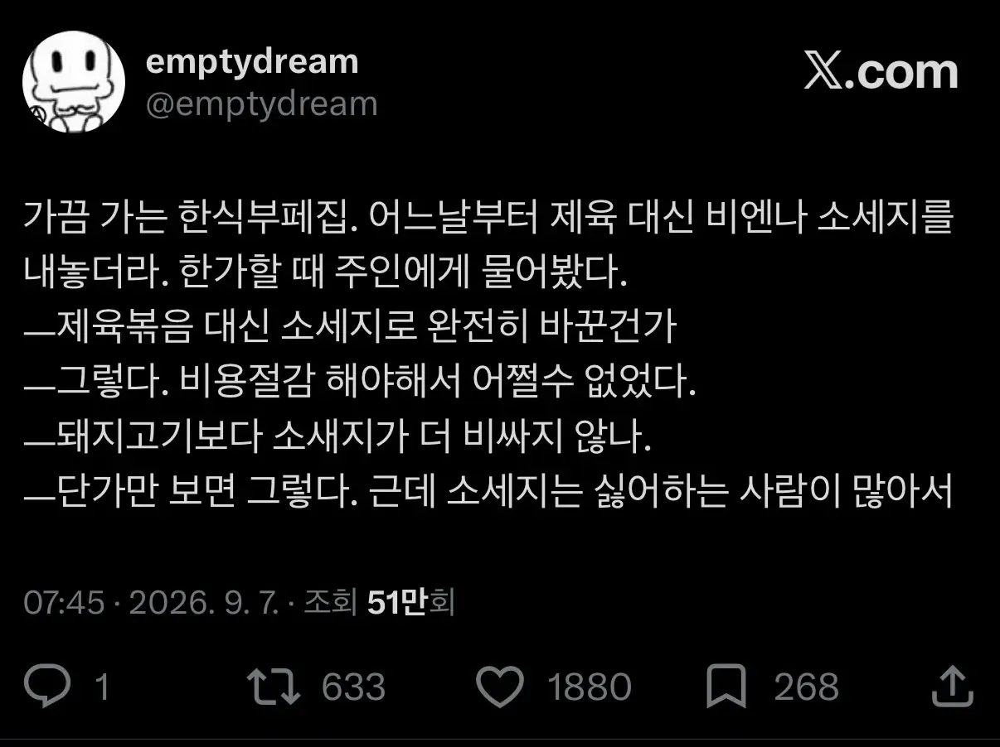
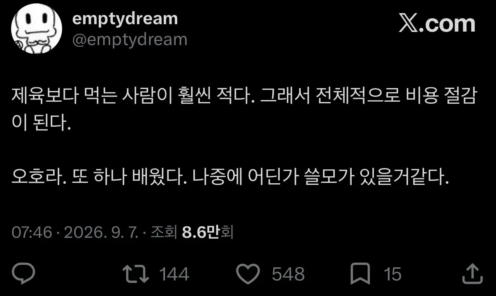
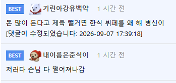

손님이 떨어져나갈 수가 없는 군대에서 적용하자
제육을 없애도 좋은데 대체할만한 메인메뉴로 내놔야지 돈까스나 불고기나 근데 메인을 사이드격인 소세지로 퉁치는건 장사접겠다는거 아닌가
우리동네 한식부페집은 돈까스 무한리필(달라고 할때 마다 갯수얘기하면 그때그때 튀겨줌)에 제육은 기본 반찬임 둘다 단맛이라 좀 물림(세판을 비우며....)
세판 비우면.
물려야 정상 아냐? ㅋㅋㅋ
세판이면 단맛없어도 물려 친구야...
과연. 손님들을 모두 쫒아내서 원가절감을 확실히 하겠다는 거구나
수요를 줄여서 비용을 절감하는 기적의 경제학
한식 뷔페에 제육이랑 상추 없으면 시발 거기를 왜 가냐 ㅋㅋㅋㅋㅋㅋㅋㅋㅋㅋㅋㅋ
나 아는곳도 제육에 단가 절감한다고 김치 넣기 시작하더라
손님 절반으로 떨어짐
제육이 인기가 많다 = 제육을 먹으러 온다 라는 간단한 사고연계가 안되시는 분이 요식업을.....
비슷하게 저가 메뉴인 짜장면이 인기가 많으니 짜장면 퀄리티를 떨어트리는 중식집도 있음.
그런 곳이 어디있냐고? 우리동네에 진짜 있음.
점점 짜장면 퀄이 떨어지기 시작해서 언젠가부터 간을 안 하는지 밍숭맹숭해짐.
그 뒤로는 점심시간에 점점 사람 줄어드는 게 손님인 내가 보기에도 체감될 정도.
현재는 '개인적인 사정으로 쉽니다' 붙어있더라.
예전에 가본집인가..? 짜장면 현금 4천원 써놨길래 호기심에 먹어봤는데 존노맛이라 뭐지? 했었는데
옆에 삼선짬뽕 12000원짜리 먹는거 보니까 존나 먹고 싶더라
근데 난 짜장 좋아해서 다시 안갔음
걍 트위터 망상글 같은데 진지하노
구내식당에 제육 나오면 밥 위에 산더미처럼 올려서 가져가는 새끼들 있던데 내가 그럼
솔직히 나 같은 사람 몇명만 있어도 남는거 없을듯
생각보다 제육이 많이 남음. 양념맛이 쎄서 저렴한 고기로해도 티가 안나고 야채류 적게해도 무리 없어서 양파싸면 양파 많이 넣고 아니면 파 좀 넣는식으로 코스트 조절도 쉬움.
한식뷔페에서 진짜 남는거 없으면 제육이 고정메뉴일수 없음.
저분쇄 돈육99퍼 소세지를 내놔라!